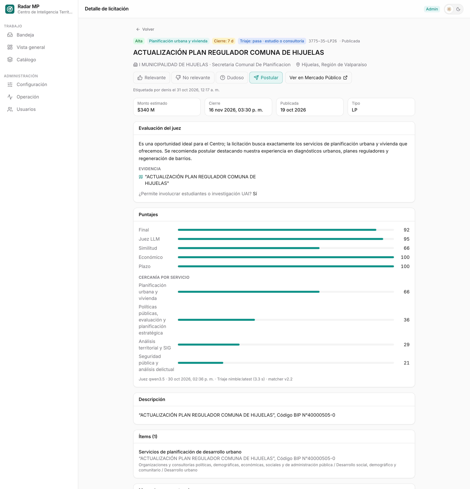

13 Bandeja
La bandeja es la pantalla principal y la única que usa todo el equipo: la lista de oportunidades de la unidad, ordenada por puntaje, con el detalle de cada una al lado. Disponible desde el rol lectura; los botones para etiquetar aparecen desde analista.

13.1 Qué hay en la pantalla
13.1.1 Vistas
Las pestañas de arriba eligen qué mirar:
| Vista | Qué muestra | Para qué |
|---|---|---|
| Oportunidades | Prioridad alta y media | El trabajo diario |
| Prioridad baja | Juzgadas, con puntaje bajo el umbral de media | Revisar de vez en cuando |
| Todas las evaluadas | Todo lo que pasó los filtros | Buscar algo puntual |
| Descartadas por el juez | El triaje o el juez dijeron que no | Detectar errores del modelo |
| Excluidas por filtro | Botadas por una regla de exclusión, con el motivo | Detectar reglas demasiado amplias |
13.1.2 Filtros y orden
Debajo de las vistas hay una fila de filtros:
- Buscar por título, código o comprador (tecla
/). - Servicio y región.
- Etiqueta: todas, sin etiqueta, relevantes, postuladas, no relevantes o dudosas.
- Orden: puntaje (por defecto), cierre más próximo, más recientes o monto.
- Publicadas entre dos fechas.
- Solo abiertas, activado por defecto. Si no hay resultados, la bandeja ofrece incluir las ya cerradas.
Todo queda en la dirección de la página (?vista=descartadas&servicio=…&sel=…), así que una vista filtrada, o una licitación seleccionada, se comparte copiando el enlace. La lista muestra 50 licitaciones por página.
13.1.3 Cada fila
A la izquierda, el puntaje final y la prioridad. Al centro, el nombre, el comprador y la región, el servicio propuesto y la primera línea del resumen del juez (o el motivo de exclusión). A la derecha, el monto, cuántos días faltan para el cierre y, para analista en adelante, los botones de etiqueta.
13.1.4 El detalle
Al seleccionar una fila se abre el detalle a la derecha, sin salir de la lista; con Enter o el ícono ⤢ se abre en página completa (/l/<código>). Responde la pregunta «¿por qué esta licitación está aquí?». De arriba hacia abajo:
- Encabezado: prioridad, servicio, cierre, resultado del triaje y su categoría de entregable, código y estado. Los botones de etiqueta, el enlace a Mercado Público y, si ya tiene etiqueta, quién la puso y cuándo.
- Datos: monto estimado, cierre, publicación y tipo de licitación.
- Evaluación del juez: su resumen, la evidencia que citó del texto, los riesgos, los casos de referencia que consultó (con su similitud) y si permite involucrar estudiantes o investigación UAI. Si no fue juzgada, explica por qué: regla de exclusión, triaje o fuera del tope del día.
- Puntajes: el final y sus cuatro componentes (juez, similitud, económico, plazo), y la cercanía con los cuatro servicios más parecidos. Al pie, qué modelos la evaluaron y cuándo.
- Descripción e ítems, con la evidencia del juez resaltada.
- Mercado: quién gana licitaciones parecidas, montos típicos y comportamiento del comprador (Organismos compradores).
- Comprador: cuántas licitaciones ha publicado, sus proveedores más adjudicados y sus licitaciones recientes.

13.1.5 Teclado
La bandeja se puede recorrer entera sin mouse:
| Tecla | Acción |
|---|---|
j / ↓ |
Siguiente licitación |
k / ↑ |
Anterior |
Enter |
Abrir en página completa |
/ |
Ir al buscador |
Esc |
Cerrar el detalle |
1 2 3 p |
Relevante, no relevante, dudoso, postular (analista en adelante) |
13.2 Cómo se hace
13.2.1 Revisar las oportunidades del día
- Abrir la bandeja en Oportunidades (es la vista por defecto).
- Para ver solo lo nuevo, filtrar Publicadas desde ayer, o Etiqueta: Sin etiqueta.
- Seleccionar la primera fila y recorrer con
j. - En cada una, leer el resumen y la evidencia; si hace falta, revisar riesgos y mercado.
13.2.2 Etiquetar
Desde el rol analista, cada licitación se puede marcar con un botón o una tecla:
| Botón | Tecla | Significa |
|---|---|---|
| 👍 Relevante | 1 |
Sirve a la unidad |
| 👎 No relevante | 2 |
No sirve |
| ? Dudoso | 3 |
No está claro; hay que conversarlo |
| ✈ Postular | p |
Sirve y se decidió preparar una oferta |
- Repetir el mismo botón quita la etiqueta.
- Hay una etiqueta vigente por licitación y unidad: si otra persona marca otra cosa, la última gana.
- La etiqueta queda atribuida a quien la puso y se ve en el encabezado del detalle. Los votos de cada persona, y en qué no coinciden, se ven en la Vista general.
- El clic no cambia el puntaje ni vuelve a juzgar la licitación: sirve desde el día siguiente como caso de referencia para el juez, para calibrar umbrales y para medir aciertos (El ciclo de retroalimentación).
13.2.3 Buscar lo que se pudo haber perdido
- Ir a Descartadas por el juez o Excluidas por filtro.
- Quitar Solo abiertas si se quiere revisar el pasado.
- Si aparece algo bueno, marcarlo 👍: es la señal más valiosa. Luego, según el caso, ajustar la regla en Configuración o el servicio en el Catálogo.
13.2.4 Compartir una licitación
Seleccionarla y copiar la dirección del navegador. Quien la abra verá la misma vista y la misma licitación seleccionada, siempre que su rol le dé acceso a la bandeja.
13.3 Bitácora
| Fecha | Cambio | Commit |
|---|---|---|
| 29-oct-2026 | Primera bandeja: vistas por prioridad, filtros guardados en la dirección, panel de detalle y etiquetado con teclado. El detalle muestra la evaluación del juez con evidencia resaltada, los ítems y el historial del comprador. | ddbfd17 |
| 29-oct-2026 | El detalle muestra los casos de referencia que vio el juez y una tarjeta de mercado con datos de adjudicaciones. | 751cfab |
| 30-oct-2026 | Llega el triaje: el detalle muestra si pasó y la categoría de entregable; las descartadas explican el motivo. | 1b163ff |
| 30-oct-2026 | Con inicio de sesión, cada etiqueta queda atribuida a la persona con sesión iniciada, ya no a un nombre escrito a mano. | 6e70353 |
| 30-oct-2026 | Los botones de etiqueta solo aparecen desde jefatura; para lectura y analista la bandeja es de consulta. | 263246a |
| 31-oct-2026 | Los analistas también etiquetan; lectura sigue siendo solo consulta. Abrir el detalle o Mercado Público queda registrado, y cada voto guarda lo que decían el triaje y el juez. | 0c23c23, f658574 |
- Un campo para comentar el porqué de una etiqueta; hoy los comentarios solo entran por la planilla de evaluación (
radar eval). pendiente